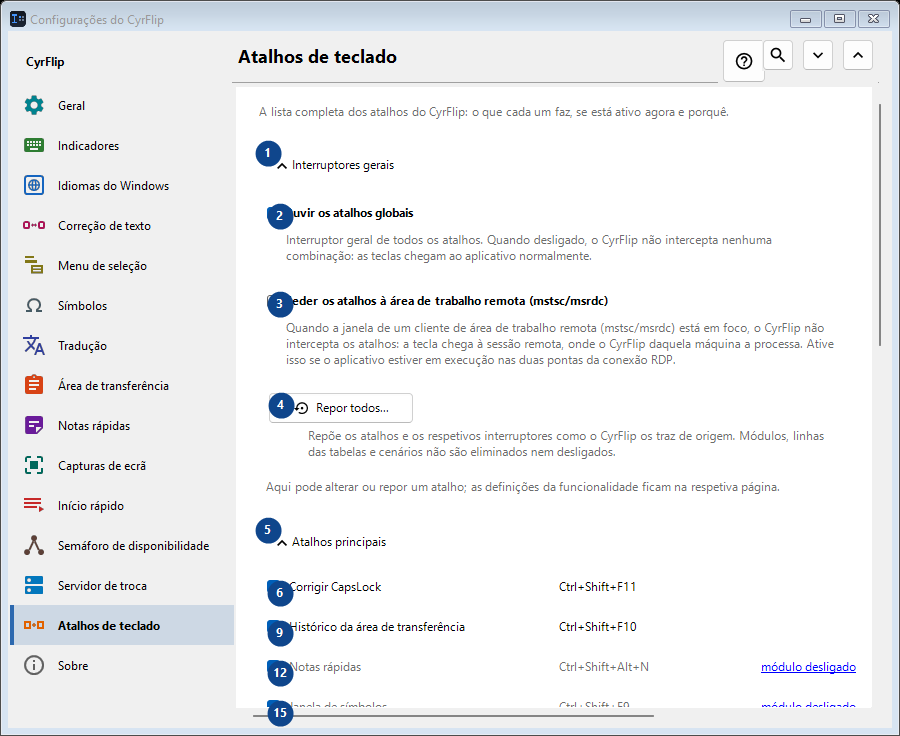
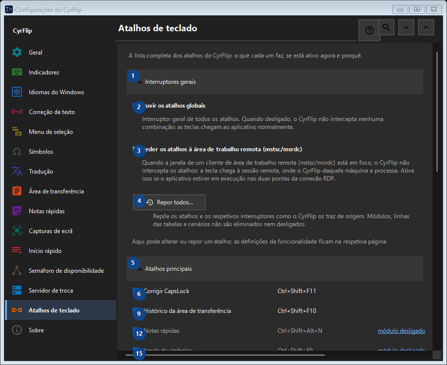

Atalhos de teclado
Para que serve
A lista completa dos atalhos do CyrFlip: o que cada um faz, se está ativo agora e porquê.


Ordem de utilização
As definições são aplicadas de imediato. Não existe uma ordem obrigatória; use os grupos abaixo.
Elementos
1. Interruptores gerais
Use este comando para a ação indicada. Leia qualquer confirmação antes de aceitar.
Os seus atalhos2. Ouvir os atalhos globais
Interruptor geral de todos os atalhos. Quando desligado, o CyrFlip não intercepta nenhuma combinação: as teclas chegam ao aplicativo normalmente.
Os seus atalhos3. Ceder os atalhos à área de trabalho remota (mstsc/msrdc)
Quando a janela de um cliente de área de trabalho remota (mstsc/msrdc) está em foco, o CyrFlip não intercepta os atalhos: a tecla chega à sessão remota, onde o CyrFlip daquela máquina a processa. Ative isso se o aplicativo estiver em execução nas duas pontas da conexão RDP.
Os seus atalhos4. Repor todos...
Repõe os atalhos e os respetivos interruptores como o CyrFlip os traz de origem. Módulos, linhas das tabelas e cenários não são eliminados nem desligados.
Os seus atalhos5. Atalhos principais
Use este comando para a ação indicada. Leia qualquer confirmação antes de aceitar.
Os seus atalhos6. Corrigir CapsLock Ctrl+Shift+F11
Use este comando para a ação indicada. Leia qualquer confirmação antes de aceitar.
Os seus atalhos7. Alterar... - Corrigir CapsLock Ctrl+Shift+F11
Use este comando para a ação indicada. Leia qualquer confirmação antes de aceitar.
Os seus atalhos8. Padrão - Corrigir CapsLock Ctrl+Shift+F11
Use este comando para a ação indicada. Leia qualquer confirmação antes de aceitar. Este elemento não está disponível. Ative primeiro a função ou selecione uma entrada.
Os seus atalhos9. Histórico da área de transferência Ctrl+Shift+F10
Use este comando para a ação indicada. Leia qualquer confirmação antes de aceitar.
Os seus atalhos10. Alterar... - Histórico da área de transferência Ctrl+Shift+F10
Use este comando para a ação indicada. Leia qualquer confirmação antes de aceitar.
Os seus atalhos11. Padrão - Histórico da área de transferência Ctrl+Shift+F10
Use este comando para a ação indicada. Leia qualquer confirmação antes de aceitar. Este elemento não está disponível. Ative primeiro a função ou selecione uma entrada.
Os seus atalhos12. Notas rápidas Ctrl+Shift+Alt+N
Use este comando para a ação indicada. Leia qualquer confirmação antes de aceitar.
Os seus atalhos13. Alterar... - Notas rápidas Ctrl+Shift+Alt+N
Use este comando para a ação indicada. Leia qualquer confirmação antes de aceitar.
Os seus atalhos14. Padrão - Notas rápidas Ctrl+Shift+Alt+N
Use este comando para a ação indicada. Leia qualquer confirmação antes de aceitar. Este elemento não está disponível. Ative primeiro a função ou selecione uma entrada.
Os seus atalhos15. Janela de símbolos Ctrl+Shift+F9
Use este comando para a ação indicada. Leia qualquer confirmação antes de aceitar.
Os seus atalhos16. Alterar... - Janela de símbolos Ctrl+Shift+F9
Use este comando para a ação indicada. Leia qualquer confirmação antes de aceitar.
Os seus atalhos17. Padrão - Janela de símbolos Ctrl+Shift+F9
Use este comando para a ação indicada. Leia qualquer confirmação antes de aceitar. Este elemento não está disponível. Ative primeiro a função ou selecione uma entrada.
Os seus atalhos18. Semáforo de disponibilidade Ctrl+Shift+Alt+T
Use este comando para a ação indicada. Leia qualquer confirmação antes de aceitar.
Os seus atalhos19. Alterar... - Semáforo de disponibilidade Ctrl+Shift+Alt+T
Use este comando para a ação indicada. Leia qualquer confirmação antes de aceitar.
Os seus atalhos20. Padrão - Semáforo de disponibilidade Ctrl+Shift+Alt+T
Use este comando para a ação indicada. Leia qualquer confirmação antes de aceitar. Este elemento não está disponível. Ative primeiro a função ou selecione uma entrada.
Os seus atalhos21. Captura de uma área do ecrã Ctrl+F12
Use este comando para a ação indicada. Leia qualquer confirmação antes de aceitar.
Os seus atalhos22. Alterar... - Captura de uma área do ecrã Ctrl+F12
Use este comando para a ação indicada. Leia qualquer confirmação antes de aceitar.
Os seus atalhos23. Padrão - Captura de uma área do ecrã Ctrl+F12
Use este comando para a ação indicada. Leia qualquer confirmação antes de aceitar. Este elemento não está disponível. Ative primeiro a função ou selecione uma entrada.
Os seus atalhos24. Captura de todo o ecrã Ctrl+F11
Use este comando para a ação indicada. Leia qualquer confirmação antes de aceitar.
Os seus atalhos25. Alterar... - Captura de todo o ecrã Ctrl+F11
Use este comando para a ação indicada. Leia qualquer confirmação antes de aceitar.
Os seus atalhos26. Padrão - Captura de todo o ecrã Ctrl+F11
Use este comando para a ação indicada. Leia qualquer confirmação antes de aceitar. Este elemento não está disponível. Ative primeiro a função ou selecione uma entrada.
Os seus atalhos27. Captura de uma área com desenho Ctrl+Alt+F12
Use este comando para a ação indicada. Leia qualquer confirmação antes de aceitar.
Os seus atalhos28. Alterar... - Captura de uma área com desenho Ctrl+Alt+F12
Use este comando para a ação indicada. Leia qualquer confirmação antes de aceitar.
Os seus atalhos29. Padrão - Captura de uma área com desenho Ctrl+Alt+F12
Use este comando para a ação indicada. Leia qualquer confirmação antes de aceitar. Este elemento não está disponível. Ative primeiro a função ou selecione uma entrada.
Os seus atalhos30. Captura de todo o ecrã com desenho Ctrl+Alt+F11
Use este comando para a ação indicada. Leia qualquer confirmação antes de aceitar.
Os seus atalhos31. Alterar... - Captura de todo o ecrã com desenho Ctrl+Alt+F11
Use este comando para a ação indicada. Leia qualquer confirmação antes de aceitar.
Os seus atalhos32. Padrão - Captura de todo o ecrã com desenho Ctrl+Alt+F11
Use este comando para a ação indicada. Leia qualquer confirmação antes de aceitar. Este elemento não está disponível. Ative primeiro a função ou selecione uma entrada.
Os seus atalhos33. Abrir a pasta de capturas Ctrl+F10
Use este comando para a ação indicada. Leia qualquer confirmação antes de aceitar.
Os seus atalhos34. Alterar... - Abrir a pasta de capturas Ctrl+F10
Use este comando para a ação indicada. Leia qualquer confirmação antes de aceitar.
Os seus atalhos35. Padrão - Abrir a pasta de capturas Ctrl+F10
Use este comando para a ação indicada. Leia qualquer confirmação antes de aceitar. Este elemento não está disponível. Ative primeiro a função ou selecione uma entrada.
Os seus atalhos36. Abrir o menu pelo teclado Ctrl+Shift+Alt+M
Use este comando para a ação indicada. Leia qualquer confirmação antes de aceitar.
Os seus atalhos37. Alterar... - Abrir o menu pelo teclado Ctrl+Shift+Alt+M
Use este comando para a ação indicada. Leia qualquer confirmação antes de aceitar.
Os seus atalhos38. Padrão - Abrir o menu pelo teclado Ctrl+Shift+Alt+M
Use este comando para a ação indicada. Leia qualquer confirmação antes de aceitar. Este elemento não está disponível. Ative primeiro a função ou selecione uma entrada.
Os seus atalhos39. Enviar área de transferência para o servidor
Use este comando para a ação indicada. Leia qualquer confirmação antes de aceitar.
Os seus atalhos40. Alterar... - Enviar área de transferência para o servidor
Use este comando para a ação indicada. Leia qualquer confirmação antes de aceitar.
Os seus atalhos41. Padrão - Enviar área de transferência para o servidor
Use este comando para a ação indicada. Leia qualquer confirmação antes de aceitar. Este elemento não está disponível. Ative primeiro a função ou selecione uma entrada.
Os seus atalhos42. Obter área de transferência do servidor
Use este comando para a ação indicada. Leia qualquer confirmação antes de aceitar.
Os seus atalhos43. Alterar... - Obter área de transferência do servidor
Use este comando para a ação indicada. Leia qualquer confirmação antes de aceitar.
Os seus atalhos44. Padrão - Obter área de transferência do servidor
Use este comando para a ação indicada. Leia qualquer confirmação antes de aceitar. Este elemento não está disponível. Ative primeiro a função ou selecione uma entrada.
Os seus atalhos45. Mouse
Use este comando para a ação indicada. Leia qualquer confirmação antes de aceitar.
Os seus atalhos46. Alterar... - Menu sobre a seleção Ctrl + botão direito do mouse
Use este comando para a ação indicada. Leia qualquer confirmação antes de aceitar.
Os seus atalhos47. Padrão - Menu sobre a seleção Ctrl + botão direito do mouse
Use este comando para a ação indicada. Leia qualquer confirmação antes de aceitar. Este elemento não está disponível. Ative primeiro a função ou selecione uma entrada.
Os seus atalhos48. Conversão de layouts
Use este comando para a ação indicada. Leia qualquer confirmação antes de aceitar.
Os seus atalhos49. Tradução
Use este comando para a ação indicada. Leia qualquer confirmação antes de aceitar.
Os seus atalhos50. Início rápido
Use este comando para a ação indicada. Leia qualquer confirmação antes de aceitar.
Os seus atalhos51. Windows
Use este comando para a ação indicada. Leia qualquer confirmação antes de aceitar.
Os seus atalhos